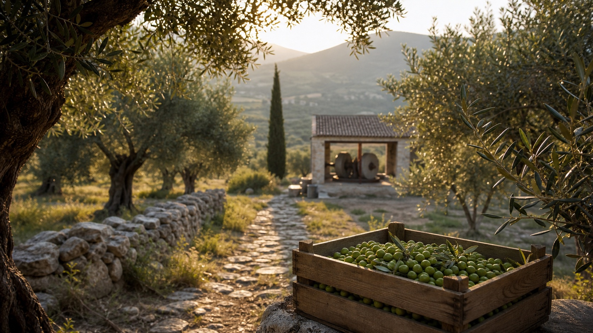

Previewasset
Produktverden
Premium olivenolje, daglig rituale og nordisk ro. Brukes i hero, produktkort og førsteinntrykk.

Visuell retning
OliveX bør bruke et rolig, produktnært visuelt system: ekte produktfoto og produsentvideo når det finnes, genererte bilder til art direction og stemning, og ingen falske etiketter, sertifikater eller helsepåstander.
Prinsipp
GPT Image 2 og tilsvarende bildegenerering kan brukes til raske visuelle retninger, bildevarianter, bakgrunner og trygge miljøbilder. Det skal ikke brukes til å lage produktbevis: ingen falske COA-er, lesbare etiketter, labverdier, sertifiseringsmerker, personanbefalinger eller claims som ikke finnes i godkjent produktgrunnlag.
Visuelt system
Premium olivenolje, daglig rituale og nordisk ro. Brukes i hero, produktkort og førsteinntrykk.

Produsent, olivenlund og miljø i Hellas. Skal erstattes av ekte video, poster, captions og transkript.
Nøytral plassholder uten produktløfte. Byttes når navn, innhold, pakning, størrelse og pris er levert.
GPT Image 2 workflow
Lag 3-5 visuelle retninger for hero, produktmiljø, lys, materialer og mobile crops før foto/video låses.
Lag miljøbilder uten tekst, logo, sertifikater eller målbare fakta. Bildene skal støtte opplevelsen, ikke bevise claims.
Rydd bakgrunner, lag crop-varianter, test lysretning og komposisjon når ekte produktfoto finnes.
Ikke generer analysebevis, labrapporter, QR-koder, stempler eller sertifiseringer. De må komme fra ekte kilder.
Ikke generer lesbare etiketter, dosage, næringsinnhold, polyfenolverdier, batchdata eller godkjenningsmerker.
Ikke bruk syntetiske mennesker som leger, laboratoriepersonell, produsent eller kundeanbefalinger.
Promptbibliotek
| Bruk | Promptretning | Gate før produksjon |
|---|---|---|
| Hero v2 | Premium, fotorealistisk olivenolje på lys stein, norsk morgenlys, negativ plass til tekst, ingen ord, ingen etikett. | Bytt til ekte packshot når emballasje og logo er godkjent. |
| Daglig rituale | Målt skje, kjøkkenbenk, vann, olivenolje og rolig morgenstemning. Ingen kropp, sykdom eller før/etter-retorikk. | Alt-tekst og synlig bruksinstruks må komme fra godkjent copy. |
| Analysebevis-miljø | Uleselige dokumentark, glass, stein, produktnær presisjon. Ingen lesbare verdier, logoer eller stempler. | Faktisk COA/PDF vises separat når batch, lab, metode og dato finnes. |
| Produsentvideo poster | Gresk olivenlund, morgenlys, produksjonsmiljø, dokumentarisk ro, ingen mennesker hvis rettigheter ikke er bekreftet. | Bytt til ekte still fra videoen med rettigheter, captions og transkript. |
| Produkt 2 | Nøytral materialscene uten flaske, pakning, tekst eller antydning til produktkategori. | Bytt til ekte produktfoto når produkt 2 er definert. |
Produksjonshandoff
Kilder